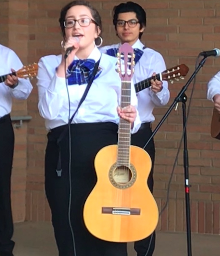
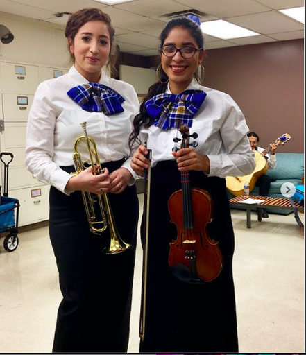
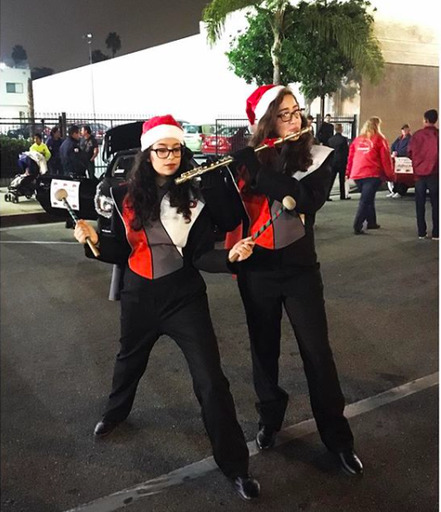
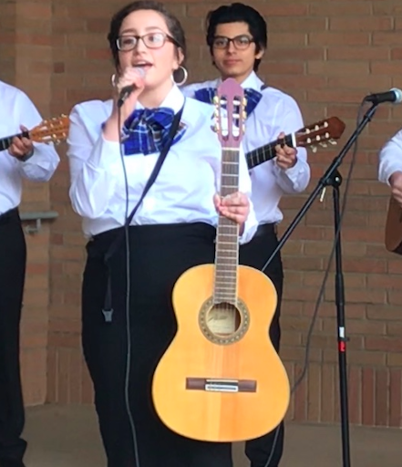
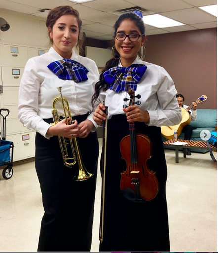
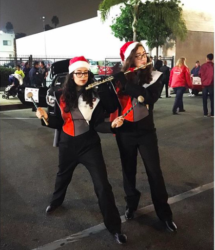

Education
UC Riverside
Music Major
Class of 2021
Portfolio





 

I am a third year UCR student with a Major in Music Composition. I find that music is a universal language and that it has the power to reach and heal the heart of millions. Therefore, the reason why I am passionate about Music is because it is an outlet of expression. It has proven to be very therapeutic to me in every aspect. So, I’d love to return everything music has done for me; I want other people to find the same comfort it has offered me. Even though I got a late introduction to music performance, throughout my years at UCR, I have learned to play a couple of instruments: piano, guitar, trumpet, flute, and the ukulele. However, superior to my love of playing instruments is singing. Since a young age, I have loved to sing. While I was growing up I forced myself to sing in many school events such as talent shows, assemblies, music ensembles, and clubs. In UCR, I am part of the Mariachi ensemble. During my freshman year, Mariachi helped suppress my homesickness by connecting back to my roots and I have remained in it ever since. My parents immigrated to America for the opportunity to give me and my three other siblings a better life. However, despite being from the U.S., I do not relate to many of its traditions. Instead, I have more of a connection to my Latin roots and beliefs; thus, I identify myself more as Mexican than American. For this reason, I find comfort in the Mariachi ensemble. It is nice to learn the music that my parents grew up listening to. In this ensemble, I have learned to play the trumpet and guitar. However, the guitar is my favorite since I get to sing along to the songs as well. Every year, I get to perform in many events such as parades, school events, and concerts. It also tested my memorization and multi tasking abilities. Unlike the other school ensembles, for mariachi, it is a tradition to memorize all the songs and be able to change the key signature or form in a moment's notice. Additionally, through my studies, I have learned to analyze and compose music. Although music is very fluid and there isn’t a strict set of rules to follow, there are essential elements that help make it sound pleasant to the ear. So, by analyzing pieces from composers such as Bach, Beethoven, Liszt, Debussy, Schumann, Schubert, Wagner, I have learned what features can make a piece more successful such as music form, repetition, harmonic diversity, effective melodies, counterpoint, contrast, contour, color and more. While some are easier to understand than others, my school assignments really engrave the lessons into my mind. I find that being a music major is very hands on so many of the assignments revolve around composing pieces that include all of the discussed elements.
• Create Spreadsheets
• Enter Data
• Sort, Organize, and Store maps by month and year
• Assist and provide information to customers at events
• Enter confirmation class gradings in teacher database
• Revise and grade assignments
• Created educational content to help promote student education
• Help students with schoolwork and homework assignments